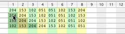
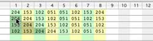
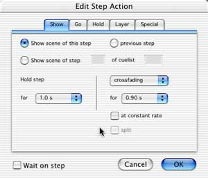

The first cue we are going to make is one which has several steps, which can also be used as a chase. For theatre applications this is unusual, but initially the steps are theatre cues ;-) Do the following:
- Select the GL1 group.
- Select the top layer.
- Do menu "Layer->Edit mode", the red dot button is now pressed.
- Set -all- your channels to the required values for step 1.
As you can see, a row with red dot has appeared in the cuelist editor, and a red line is now on top of the control window. The red line and dot means that we have new or changed data, which is not saved yet! Note: Your lights are still live.
If you look at step 1 of the cuelist editor, you see "show scene for ever, crossfading for 5.1s", followed by 8 columns of numbers. Congratulations, you have made your first cue, but what is it doing? Well, if you "Go" to this cue (it has no number yet, until we store), it will crossfade in 5.1 sec. from previous channel setting to the values which are in the columns, but only for the activated channels (which have values). As it is instructed to "hold forever", we call this a cue (see explanation of naming later). Remember: A cue compromises of one or more cuesteps in a cuelist, and ends with a "hold for ever" or the last step of a cuelist.
Now set channel 1-8 to 80, 60, 40, 20, 20, 40, 60, and 80%, so you get the same values (now in decimal) as in the pictures below. By hitting the space bar (means Next Step), and then option (alt) enter, you made step 2 with the same values as step 1. We do now have two cues, and I am sure you can make more of them this way. However I want to show you some of the capabilities of the cuelist editor, so we are going to make step 2, 3 and 4 which have shifted patterns of 1.

Select the values of channels 1-8 of step 2, and do the menu command "Copy". Next select -only- channel 2 of step 2, and do menu "Paste". The result should be as in the pictures above. Before we are going to repeat this, clear channel 1 of step 2 and paste again into channel 3 of step 3, and again into channel 4 of step 4. We do have now a shifted pattern, but we want to wrap it after channel 8 back into ch 1. So we select (with cmd/ctrl clicks) the "overflows", do menu "Cut", and paste it into ch 1 of step 2, so you get the result as show below in the pictures.
 Before "Cut" After "Paste"
Before "Cut" After "Paste"
That was hard working, but you just made a shifting pattern for four cues (yes, it still are Cues!), without the pattern generator. Normally you won't make cues this way, but it's very handy to know how to manipulate your data.
Using the path and pattern tool
Using the path and pattern tool makes is much easier to create above pattern. Just select the table data of channel 1-8 of step 1, and do copy. Now click on the Path button, and Pattern tab (see picture above).
The tool generates instantly 8 steps with your data rotated right by one for every step, and you can even preview the result. In order to get this data into your cuelist, click on "Copy and close" and paste it into the original selected cells. Your cue list now contains 8 steps with the created data pattern, see the picture right.
Before we are going to run the just made cues, we need to learn a bit more of the cuelists editor. You can e.g. move the current cues to other steps by dragging a cue to a new location. If you drag e.g. the 4 cues to step 5, 10, 15, and 20, you will see that the in-between steps are marked with "--". This is what theatre people often wants, as they now can safely add a "forgotten" cue, without fearing that cue numbers change. Cuesteps may be copied and pasted any way you want, and they can even be copy and pasted as plain text, so you can exchange your cuesteps with others via e.g. email. Just as an exercise select all steps, do copy, and paste them in your favorite text editor or email program.
Note: The cuelist editor normally shows all light channels (used and unused), but it can show only the used channels by clicking on the || button (top right of the window).
Note: The header of the cuelist editor shows the numbers of used light channels from 1 to the highest placed fixture channel. If you select a fixture(s) on the stage, the corresponding light channel(s) are blue highlighted, while the selected DMX field(s) on the control window will be red colored channel numbers in the header. This way you can quickly find what channels a fixture uses, and what channel(s) you are modifying when changing DMX values in the control panels.
Using the pattern generator with RGB fixtures
From LCedit+ v3.3 the pattern generator can also be used for RGB fixtures, even if they are placed as a matrix. In order to get matrix views correct, it's important that RGB fixtures within a matrix have sequential light channel numbers from left to right, and top to bottom. In the example right there are 32 channels in use, and are assigned as 8 columns and 4 rows. Each cuelist step of 32 channels is now shown as an 8x4 matrix, see picture right .
Keep in mind that for some effects like bounce, it is needed to have a black pixels with a few colored pixels, in order to have understandable effects.
The X and Y values determines the direction (negative values means move left, up), and the amount of moves per step.
What is saved, where and how?
All project data, like fixtures, presets and screen layout is saved in your project file in your computer by using the "File" menu "Save" or "Save As..". However as the LanBox is a standalone controller, all DMX data (like cues, scenes, layers, mappings, etc.) must be stored inside the box, so it's ready to use after power up. In order to save the LanBox data into nonvolatile memory (flash ROM in the LCX&LCM), use the menu "Save LanBox Data". You can also backup your LanBox data onto your computer by using the menu command "Backup" (use "Restore" to put data from your computer back to the box). If you save your project file together with the backup files, you can restore a complete show, in the event you erased your box.
Running cues
Once you have stored your cuelist, you can test each step (cue in this case) just by clicking on the row. By using the arrow up and down keys (or the next and previous step buttons in the control window), you can go to next and previous steps. Although it looks the same as in edit mode, but running by using the sequencer (edit mode is off) is different as soon as your steps have programmed hold times or other actions.
So for final test of your cues turn off the edit button. Now type "g10<enter>" (without quotes), and your lights cross fades to cue 10.1. in 5.1 sec. Cue 10.1 will hold for ever, until e.g. you hit the space bar, the lights will cross fade in 5.1 sec to cue 10.2. As you can see your cue where edited and now running in the same layer (the top one), but you could also start your cue in any other layer. Try e.g. "g10b", and your cue is started in layer B.
Do I need layers, when and how?
Up to now, you only used one layer, and that is fine for simple lighting work. You can use one layer to edit and run your cues, but what if you want to edit a cue, while your cues are running? The solution is simple; Run your cues in the top layer, and edit them in a lower layer. If both layers are using the same channels, your edits are not live (they are hidden by the top layer), but you can still see what you are doing on the screen. As soon as you need to run independently cues which are made for different groups, or you have show control cues, it's obvious you need to run them in separate layers. You can create, delete, and even re-order layers (LCX & LCM only), while any layer can be used to edit or run cues (so cues are not bound to any layer!).
If you want to stop a running cue, click on stop or type g.0<enter> (g dot zero enter), it goes to the "home" of the current cuelist (step 0), and disconnects all channels from the mixer, so lower layers become live. If you want to reset a layer completely to default, type g0<enter> (g zero enter), and all layer setting are back to default. If you only want to disconnect used channels from the mixer, use the "clear" button or menu command.
Note: There are many more options for layers, but they are hidden by the "advanced" triangle. Once you open this box of pandora, near anything is possible, but it can be very complex. In the LanBox-Talk archive you can find e.g. some examples of scaling and shifting shapes for moving heads.
Make a multistep cue; a chase
It's time you are going to change your four cues in cuelist 10 into a chase (or a multistep cue). As the actions of all four steps are currently the same "show scene for ever, crossfading for 5.1s", we can change the action for all together. First select all steps, as the picture shows.
Double click on the selection, or do the menu command "Edit Item", and you get a dialog window as shown in the picture left. Change the "Hold step for" into 1.0 s with the popup. Change "crossfading for" to 0.9s with the right lower popup. You are now changing the action of the steps from "hold for ever, crossfading for 5.1s" into " hold for 1s, crossfading for 0.9s"
As we told before it means that these steps will not be a cue anymore, but will automatically go to next step after 1 sec (this is sometimes called linked cues). At the same time it will crossfade to the scene data in 0.9s. Note: The hold time and fade time are independently from each other.
As you can see, many other actions are possible, but we will come to that in the show chapter. Now click on OK.
Your cuelist is now converted into one cue 10, which has 4 steps of 1sec each. If you store this you can run it just as any other cue, but we want to turn it into something which keeps running (a simple chase).
Click with the command (ctrl) key pressed in the action field of step 5, type "go .1" (see picture). Click on the 5 of step 5, and a red dot also appears before the 5. You have just add a step by typing (instead of using the dialog) an action. The "go .1" turns this cue into an endless loop, so it starts again step 1 after step 4.
You can save this cue just by clicking the store button, but you can also save it as another cue, by changing the cue number field into e.g. 20, and then click store. If you do so, you have in total 5 cues, namely 10.1 through 10.4, and 20 (actually 20.1), which can run in any layer.
Notes for theater application with LCX, LCE or LCM
As it is common in theater to use fixed cue numbers we have added a feature in the LCX, LCE and LCM to make fixed cue steps with light (cues). If you store your cues only at odd steps xx.1, xx.3, etc. it will leave space for inserting one cue afterwards without renumbering. If you want to delete a cue use replace with blank comment as action. Be aware that split fades (LCX, LCE & LCM only) "eats" two steps, so using steps 5,10,15, etc. is more convenient. Here is an example of a split fade, with a 10s fade in, while the fade-out of 15s starts at 7.5s from the beginning (at 75% of the fade-in):
show d01 for 7.5s, split fading in for 10s
show previous for ever, split fading out for 15s
:d01
1[026] 2[026] 3[230] 4[230] 5[026] 6[026]
To start with the smallest entity, a cuestep holds the action information for a layer. A cuestep can have been linked with lighting data, it is called a scene. Cuesteps must be stored in a organized way, so they are stored into lists of cuesteps called cuelists. A cuelist may contain up to 99 cuesteps, while there can be up to 999 cuelists (500 in the LC) in a LanBox.
A cue (only in LCX, LCE & LCM) compromises of one or more cuesteps in a cuelist, which ends with a "hold for ever" or the last step of a cuelist (well, actually step 0 of next cuelist). So a cue can be one cuestep, but also a cuelist with 99 steps. LCedit has special commands to "Go" to next and previous Cue. This is mostly used in theatre applications.
A chase is a cue which is made of one cuelist, but can have multiple non "hold for ever" cuesteps. A chase is special in that way, that the layers sequencer can do special sequencing, like bounce, backward, and random stepping.
OK, we have now learned how to make cues and chases, but it's still a small part of the story. In order to prevent a huge manual, we skipped several things, so the best way is practising. Make cues and chases, and if you don't know how to achieve something, contact us by email, look in the archives, or ask on the LanBox-Talk list. The show must go on, so next chapter handles about building shows and automated lighting ;-)
Connect | Stage | Control | Cues | Show | Fixtures | Keys | UDP